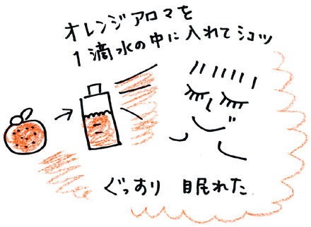

| ある日、突然、心の病気になった時、私はパニックになった。
そして翌日から治すことに必死になった。
こんなの自分のからだじゃない、私の体をもとに戻して。健康だった頃に戻して。
こんなに辛いのに病院では体の異常ではなくて、心の病気だと言われる。その時の先生の目。腹もたった。悔しかった。でも何よりも辛くて、涙がこぼれた。
夜中に動悸と息苦しさで目が覚めて、眠れない時間を過ごした。このまま治らないのではないかという不安。死んでしまうのではないかという恐怖。
薬も回数を重ねるたびにだんだん効かなくなり、症状は反比例で重くなっていく。
そんなどうにもならない時に、たくさんの人たちに出会った。身動きできないほど心の病気が辛いはずなのに、お腹をかかえて笑っている人、今日の楽しみなものを考えている人、人の心配ばかりしている人……。みんな将来のことなんて考えてない。今この瞬間を楽しんで生きている。
「ねぇ、私の体はだめなの？ このままじゃだめなの？」
そんな思いがわきあがってきた。病気が治ったら○○しよう。じゃなくて、今をどう生きるかなんじゃない？ ね、今の自分のままだって大丈夫だよ。そう考えたらすーっと肩の力が抜けた。
病気で仕事ができない？ いいよ、いいよ、誰か死ぬわけじゃないんだし。
あー、明日もこうやってしんどいのかな……。明日になってみなきゃわからない。
私、なんのために生きているんだろ。今日を楽しむため！
ちょっと無理矢理だけど、そう思うようにした。
そして体が辛い時は、目を閉じて、体の辛さにじーっと耳を傾ける。
いろんな自己流癒しを続けるうちに、ある日私は「群馬に行きたい」と思うようになった。群馬は私の唯一の身内、お姑さんが住んでいる場所。夫にそのことを言うと、「えー、やだー」と即答された。
その瞬間、自分の中で何かが弾けた。
「群馬に行きたいのっ。お姑さんの近くで、何も考えないところで、休みたいんだよぉ。もう２人で頑張って子育てして、生きていくのに疲れたっ！」
そう叫んで、床につっぷしてわあわあ泣いた。泣きながら、自分がそんなことを考えていたことに心から驚いていた。叫んだ声も自分の声のように感じなかった。
あぁ、私は心の奥底でそう思っていたんだと、やっと気づいた。自分では原因がないのに、心の病気になったと思っていたけど、そうじゃない。次々と頬を伝う、温かい涙が心地良く思えた。
たくさん泣けたその晩は、動悸もせず、一度も起きずにぐっすり眠ることができた。
体は、私やあなたが考えるより、ずっと賢い。
心のＳＯＳを敏感に察知して、私たちに教えてくれる。
それを上から抑えつけることがいいことなの？
「闘病」と言って、まるで悪のように、それをたたきのめせば、本当に明るい未来がくるの？
いろんな治し方があるのは知っているし、それで治った人たちを否定するつもりはない。あなたが楽しく気持ち良く生きているのであれば、いいと思う。
でも今真っ暗闇のなかにいる人たちに向けて、この連載を書きたい。
病気をふくめて丸ごとあなた。だから今のあなたも、あなたの体も、ちっともだめじゃない。そのままで十分！ 病気を治す……症状を消すことよりも、自分の心や体の声を聞いてあげて。
どこが痛い？ どこが辛い？ 何が怖い？
何が大切？ 何を守りたい？ 何がしたい？
病気が治ったら、じゃなくて、今、何をしている時、されている時が幸せ？
体に聞いたら、きっと見つかる。そしてあなたなりの治ったが見つかる。
この連載で、あなたなりの体と向きあう方法と、体を癒す方法が、見つかりますように。
次回から、私が出会った人たちの話を紹介します。

|